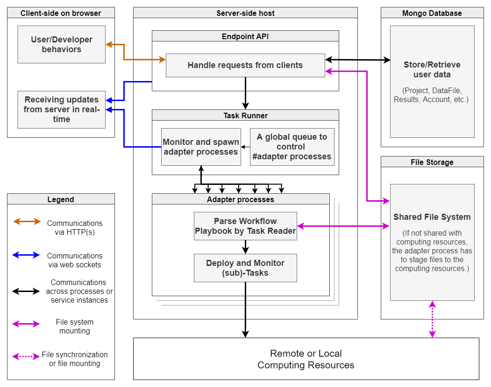

System Architecture¶
The BDP system is built with pure JavaScript. It consists of a client side and a server side. The Angular framework and Angular Material is used to build the client side and the Express is used to construct the web server. The MongoDB database is used to store all metadata. The above three elements constitue the BDP architecture and the system relies on client-server and server-database communications to work.
{kind=link}
The client makes HTTP requests to the server and the server responds the client. In the meanwhile, the client also estiblished a socket connection with the server to listen data changes on the server in real time.
Task Deployment¶
A user can send requests to execute Tasks via the client, and the server spawns Adapter processes to deploy and monitor Tasks on local or remote computing resources (please see the Adapter section for detailed information). The server comes with a built-in queue to avoid overloads. Once a Task is finished or errored, the Adapter process exited with an exit code. The exit code is 0 for a normally executed Task and other number larger than 0 indicates abnormal exit of the Task. The server then updates the database and broadcasts to related clients to inform users that the Task has success or failed.
For workflow-typed Task, the server will automatically proceed to the Task of next steps once all children Tasks of current step are finished correctly. Instead of putting Tasks of all workflow steps in a queue, the server arranges only Tasks of current step to the queue.